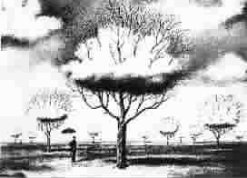

劳动、死亡和疾病
●列夫·托尔斯泰
这是一个流传在南美洲印第安人中间的故事。
那里的人们说，上帝最初造人时，不是非要他们劳动不可的。他们既不需要房屋，也不需要衣食。他们都能活到百岁而从来不知道什么是疾病。
过了一段时间，上帝想去看看人们生活得怎样。他看到的是人们互相争吵，只顾自己，不仅感受不到生活的乐趣，反而诅咒起生活来。
此时，上帝对自己说：“这是因为他们都能独立生活的缘故。”为此上帝做了重新安排：人们要活下去，就不能不劳动；为了避免受冻挨饿，人们就不得不建造房屋、耕种谷物。
“劳动会把他们联系在一起的。”上帝心想，“要是他们不合作就造不了工具，伐不了树，盖不了房子，种不了地也收不了庄稼，织不了布也做不了衣服。”
过了一些时候，上帝又来查看人间的生活情形，看看他们现在是否幸福了。
可是他发现，人们生活得比以前更糟了。他们在一起劳动是出于不得已，而且也不是大家全在一起，而是一伙一伙的。他们互相倾轧，把精力和时间都浪费在争斗之中了，所以他们的生活还不如从前。
上帝看到自己的安排并没有使人们的生活好起来，于是便决定让人们都不知道自己的死期，人们随时都会死亡，并向他们宣布了这一安排。
“要是人们知道自己随时都会死亡，”上帝心想，“也许就不会为争夺那些身外之物而浪费自己的年华了。”
但是事情还是与上帝的意愿相反，当他再来视察时，发现人们的生活还是同以前一样不幸。
那些强有力的人，利用随时会死的事实，降服了一些软弱无力的人，杀掉一些，用死亡去威胁另一些。结果，强者及其后代都不劳动，闲得百无聊赖，而弱者则不得不拼死劳动，终生不得休息。两种人互相畏惧，彼此憎恨，人的生活变得更加不快活了。
看到这种情况，上帝决定用一种方法补救：他把千奇百怪的病魔打发到人间，上帝认为，当人们都受到疾病威胁时，他们就会懂得，强者应该怜悯并帮助那些弱者。
当上帝再次回来查看人们有了得病危险以后的生活情形时，他看到人们的生活甚至比以前更糟了。上帝的本意是要通过疾病使人们能够互相同情关照，岂不知，疾病反使人们陷入更大的分裂。那些强壮得足以强迫别人劳动的人，得病时就强迫其他人来侍候自己，但临到别人生病时，他们就置之不理。那些被迫劳动、在别人生病时又得去侍候他们的弱者，其劳累程度便可想而知了，他们有了病就只能听天由命。为了不使病人影响健康人的精神状态，人们把病人和健康人的住宅远远分开。其实健康人的同情本来是会使那些可怜的病人的心情快活起来的，现在这些病人只好待在他们的房子里受煎熬，死在那里。那些雇来看护他们的人，不仅没有热情，反而厌恶他们。此外，人们还认为有许多病是传染的，由于害怕传染，他们不仅躲着患者，甚至把自己同照看病人的人都隔离开来。
上帝自言自语道：“如果连这样都不能使人们懂得他们的幸福所在，那他们就是咎由自取。”于是，他撇下人们不管了。
过了许久，人们逐渐明白，他们是应该而且也是可以过得幸福的。只是到了近代，才有少数的人懂得，劳动不应该成为人生中的苦差事，也不应该把它视为服苦役，而应该是使所有人联合起来的共同事业。他们开始懂得，死亡时刻威胁着每个人，人类唯一合乎理性的做法，就是在团结和友爱中度过有生之年的每一分钟。他们也开始懂得，疾病不应该把人们分开，恰恰相反，它应该为人类相爱提供机会。
(李建芬摘自春风文艺出版社《世界微型小说佳作选》一书)